Computational Neuroscience
Certificate University of Washington · Coursera · Rajesh P. N. Rao, Adrienne Fairhall
Eight weeks from encoding and decoding to learning and reward, written up as my own LaTeX notes.
Skills
Graphical summary
The course as a chain of questions
Open any week to read its notes.
Learning outcomes
Week 1 · Basic neurobiology
Separate descriptive, mechanistic and interpretive models of the same phenomenon, using receptive fields as the worked case.
Explain how V1 receptive fields can be built from LGN input in the Hubel and Wiesel model.
State the efficient coding hypothesis and how it accounts for the shape of receptive fields.
Describe ionic channels as gatekeepers of the membrane potential.
Trace the action potential, its propagation along the axon, and the role of myelin.
Explain the synapse doctrine, Hebbian learning and spike-timing dependent plasticity.
Tour the peripheral and central nervous systems and the cortex as a layered sheet.
Week 2 · Neural encoding
Compare recording methods from fMRI to patch clamp and what analysis each one permits.
Read raster plots and tuning curves, and say where the tuning-curve picture stops working.
Model centre-surround receptive fields as spatial filters using a difference of Gaussians.
Build the linear-nonlinear response model and explain why a linear filter alone is not enough.
Recover a neuron's feature from data with the spike-triggered average, and explain why white noise is the right stimulus.
Extend to several features with PCA and maximally informative dimensions.
Derive the Poisson model from coin flips, test it against data, and move to generalized linear models.
Week 3 · Neural decoding
Apply signal detection theory and the likelihood ratio to a two-alternative decision.
Explain how accumulating evidence over time trades speed against accuracy.
Build priors and unequal error costs into a decision rule.
Decode direction with population vectors in cricket cercal cells and motor cortex, and say why that is not enough.
Work through Bayesian decoding with maximum likelihood and maximum a posteriori estimates.
Describe stimulus reconstruction from LGN spike trains and from human fMRI.
Explain where the retina must place its threshold to detect single photons, and the role of the prior.
Week 4 · Information theory
Define entropy, noise entropy and mutual information, including their limiting cases.
Estimate information from spike patterns and recognise undersampling bias.
Compute information per single spike and apply it to place fields.
Explain efficient coding of natural stimuli: Laughlin's test, real-time adaptation, redundancy reduction and sparse coding.
Week 5 · Computing in carbon
Treat ionic gradients as batteries and ion channels as stochastic pores, each ion with its own equilibrium potential.
Write gate kinetics for potassium activation and sodium activation with inactivation.
Derive the passive membrane equation from an RC circuit.
Assemble the Hodgkin-Huxley equations and read a spike as a separation of timescales.
Reduce the neuron to integrate-and-fire, theta and two-variable models, and analyse them in the phase plane.
Use the cable equation and compartmental models to reason about dendritic computation.
Week 6 · Computing with networks
Model synaptic conductance from release probability and channel-opening kinetics.
Add a synapse to the membrane equation as one more conductance branch.
Move from spiking networks to firing-rate models and say what each gives up.
Analyse linear recurrent networks with eigenvectors: stability and selective amplification.
Explain nonlinear recurrent behaviour and analyse excitatory-inhibitory circuits with linear stability analysis.
Week 7 · Networks that learn
Formalise LTP, LTD and Hebb's rule, then show why plain and covariance rules are unstable.
Show how Oja's rule stabilises learning and what Hebbian learning computes, including where PCA fails.
Connect competitive learning, self-organising maps and the EM algorithm for mixtures of Gaussians.
Derive sparse coding from a generative model and describe predictive coding.
Week 8 · Supervision and reward
Describe the perceptron and its learning rule, and why it cannot learn XOR.
Train multilayer networks with sigmoid units by backpropagation.
Derive temporal difference learning and relate its prediction error to dopamine neurons.
Use actor-critic learning to go from prediction to action, and relate it to the basal ganglia.
Interactive simulations
Small models of ideas from the course, with illustrative parameters.
Recover a filter from spikes
A synthetic neuron with a known filter is driven by white noise. More data brings the spike-triggered average closer to the truth.
Move the decision threshold
Two overlapping response distributions. Slide the threshold and trace the ROC curve.
How much can a binary code carry?
Entropy of a spike/no-spike code as firing probability changes.
Hodgkin-Huxley spike
Solved live with the classic squid-axon parameters. Compare how quickly m, h and n respond.
Integrate and fire
Drive a leaky integrator with more current. Below threshold it never spikes; above it, rate rises with current.
One eigenvalue, three regimes
A single recurrent mode. Below 1 it amplifies, at 1 it integrates, above 1 it explodes.
Hebb explodes, Oja converges
Both rules find the same direction in correlated input. Only Oja's keeps the weight finite.
What one neuron cannot learn
Train a perceptron. AND and OR converge; XOR never does, however long it trains.
Prediction error moves back in time
Temporal difference learning over 120 trials. The error at reward shifts to the cue. Switch on omission to see the dip.
Figures from my notes
Plots and simulations made for the notes, separate from the lecture slides.

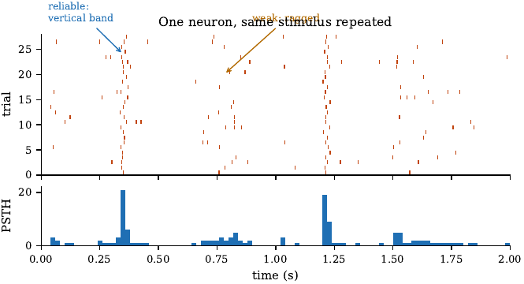

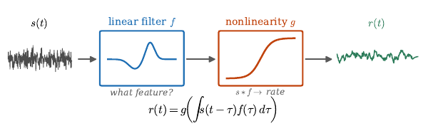

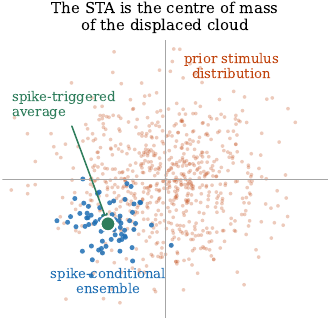

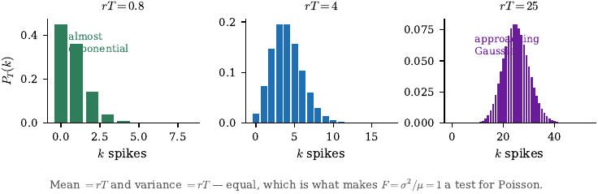

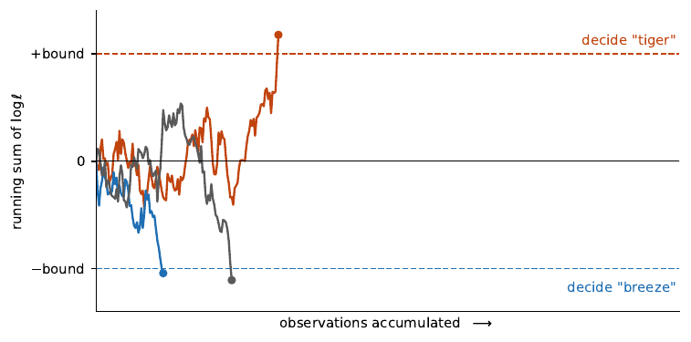

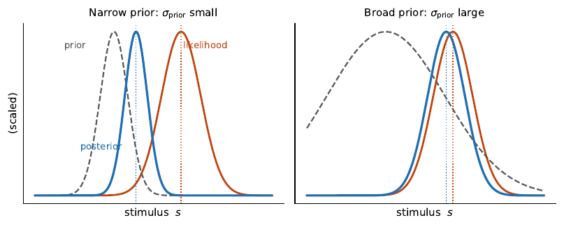

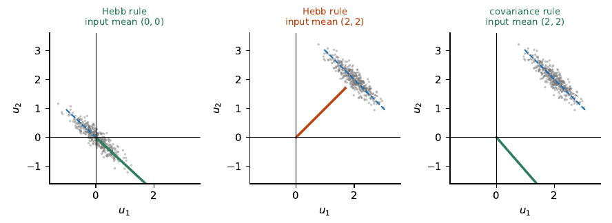

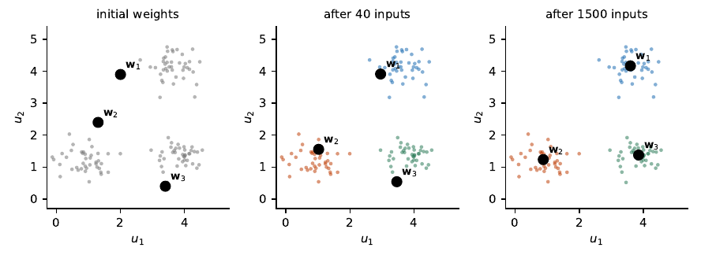

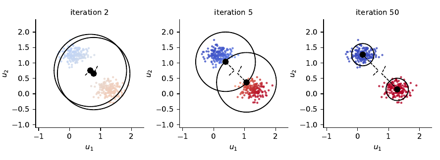

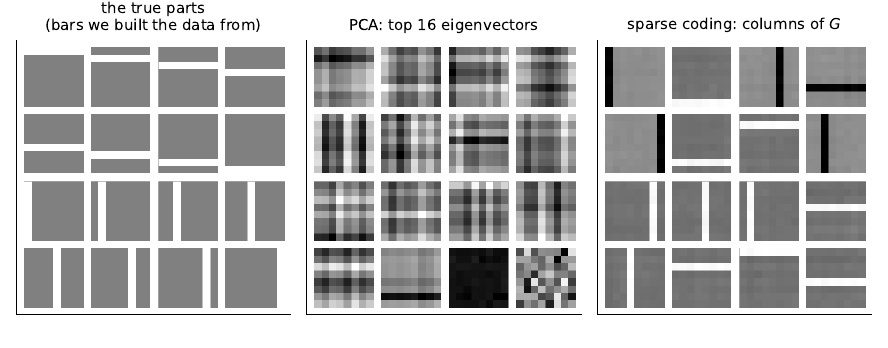

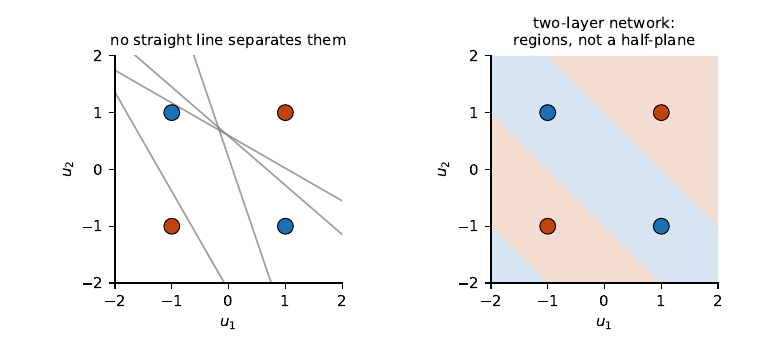

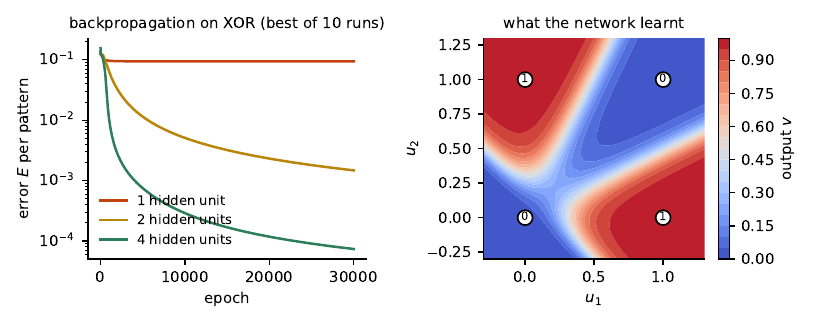

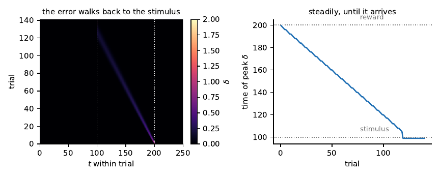

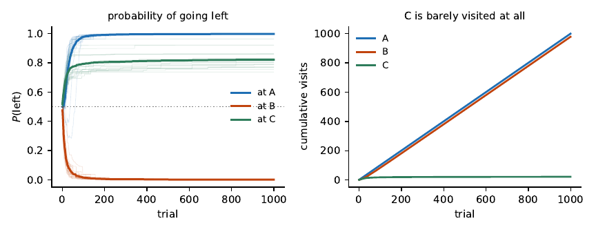